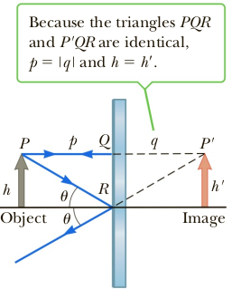

Flat mirrors

We begin by examining the flat mirror. Consider a point source of light placed at O in Figure 1, a distance p in front of a flat mirror. The distance p is called the object distance. Light rays leave the source and are reflected from the mirror. After reflection, the rays diverge (spread apart), but they appear to the viewer to come from a point I behind the mirror. Point I is called the image of the object at O. Regardless of the system under study, images are formed at the point where rays of light actually intersect or where they appear to originate. Because the rays in the figure appear to originate at I, which is a distance q behind the mirror, that is the location of the image. The distance q is called the image distance. Images are classified as real or virtual. In the formation of a real image, light actually passes through the image point. For a virtual image, light doesn’t pass through the image point, but appears to come (diverge) from there. The image formed by the flat mirror in Figure 1 is a virtual image. In fact, the images seen in flat mirrors are always virtual (for real objects). Real images can be displayed on a screen (as at a movie), but virtual images cannot. We examine some of the properties of the images formed by flat mirrors by using the simple geometric techniques. To find out where an image is formed, it’s necessary to follow at least two rays of light as they reflect from the mirror as in Figure 2. One of those rays starts at P, follows the horizontal path PQ to the mirror, and reflects back on itself. The second ray follows the oblique path PR and reflects as shown. An observer to the left of the mirror would trace the two reflected rays back to the point from which they appear to have originated: point P'. A continuation of this process for points other than P on the object would result in a virtual image (drawn as a light red arrow) to the right of the mirror. Because triangles ΔPQR and ΔP'QR are identical, PQ = P'Q. Hence, we conclude that the image formed by an object placed in front of a flat mirror is as far behind the mirror as the object is in front of the mirror. Geometry also shows that the object height h equals the image height h'. The lateral magnification M is defined as
M = image height / object height = h' /h
This equation is a general definition of the lateral magnification of any type of mirror. For a flat mirror, M = 1 because h' = h.
In summary, the image formed by a flat mirror has the following properties:
The image is as far behind the mirror as the object is in front.
The image is unmagnified, virtual, and upright. (By upright, we mean that if the object arrow points upward, as in Figure 2, so does the image arrow. The opposite of an upright image is an inverted image.)
Finally, note that a flat mirror produces an image having an apparent left–right reversal. You can see this reversal standing in front of a mirror and raising your right hand. Your image in the mirror raises the left hand. Likewise, your hair appears to be parted on the opposite side, and a mole on your right cheek appears to be on your image’s left cheek.
